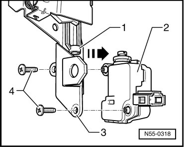

Rear Window Unlock Unit
Rear Lid
Rear Window Unlock Unit
Removing
- Remove lock for hinged window. Refer to --> [ Latch for Hinged Window ] Latch For Hinged Window

- Remove bolts - 4 - from carrier piece - 3 -.
- Unclip motor - 2 - in - direction of arrow - out of operating element - 1 -.
Installation
To install, perform the steps used for removal in reverse order.
- Tightening specification: Bolts - 4 - 2.5 Nm.